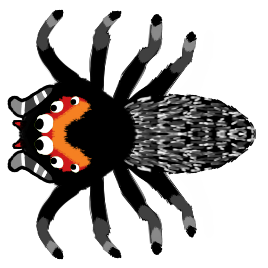
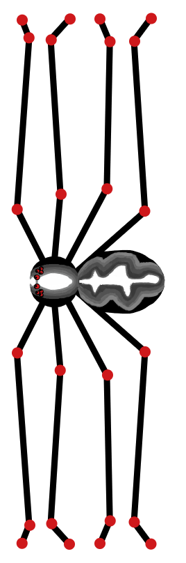
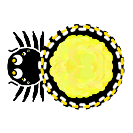
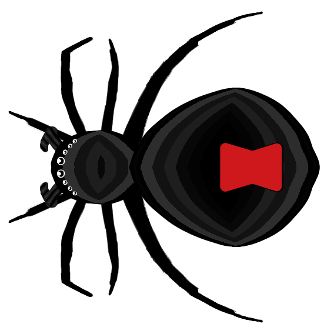
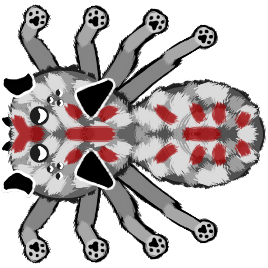
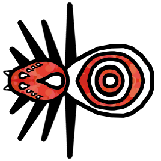
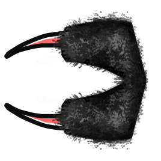
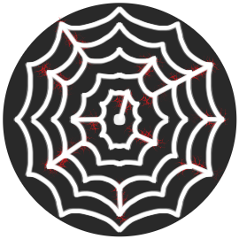

Spidey Party is here!!
I’ve finished the 3rd and last planned bug family for “Nectar of the Gods''. It was really important for me to have 3 completely unique playable teams in NotG. I am hoping that for an asymmetrical real-time strategy game 3 teams is the sweet spot for tons of variability and emergent interactions. This hope is based on how lovely the 3 Starcraft factions each held down important corners of the games mechanics. Spidey Party is dedicated to arachnids, in all their 8 legged glory!
As I set out to translate spiders to NotG, I tried to find unique spiders full of personality. Just like beetles and bees, I found spiders to be rich with diversity and ways of life around the world. I feel like spiders are inherently kinda edgy, so we got some menacing units. But we also have some fun, cuddly spiders in addition to some special spiderweb mechanics.
Let’s get into the 8 spidey units now playable in “Nectar of the Gods”!
Jumpy Spider
The core spidey unit, very much overcaffeinated. Generally recognized by their eye pattern.
Ability: Jumps between rows, 1 at a time.
Daddy Spider
A gentle giant! The Daddy Spider’s spindly legs span 3 rows.
Pop Spider
Indie-pop, punk-pop, dance-pop, soda-pop, the Pop Spider loves it all. But all that pent up fandom can have explosive consequences…
Ability: Explodes.
Widow Spider
Widow Spiders are actually early pioneers of the bug drinking revolution! Pre-nectar-enlightenment, a Widow would pulse digestive juices over its prey, liquifying it, and then suck the slurry into its mouth. All without a straw.
Wolf Spider
The Wolf Spider loves long walks through deciduous forests and full moons.
Ability: Upon summoning, the wolf spider howls at the moon speeding up fellow spiders.
Water Spider
The Water Spider is the only spider that lives the entirety of its life under water! It achieves this by trapping an air bubble with the dense hairs on its abdomen and legs.
Ability: The Water Spider has a bubble, believed to be fruit punch, that mitigates the first damage it takes and pops.
Spider Jaws
Spider Jaws, aka articulated fangs, aka pincers, aka chelicerae.
Ability: One bite from these jaws and the wicked venom will change the team of the bug affected.
Spider Web
The Spider Web is iconic. And it works very much the same way in Nectar of the Gods as it does in real life...
Ability: Linking spider webs together multiplies their stickiness.
I hope you enjoy Spidey Party!! I’m really proud of the way they turned out. Go take them for a spin and tell me which is your favorite!